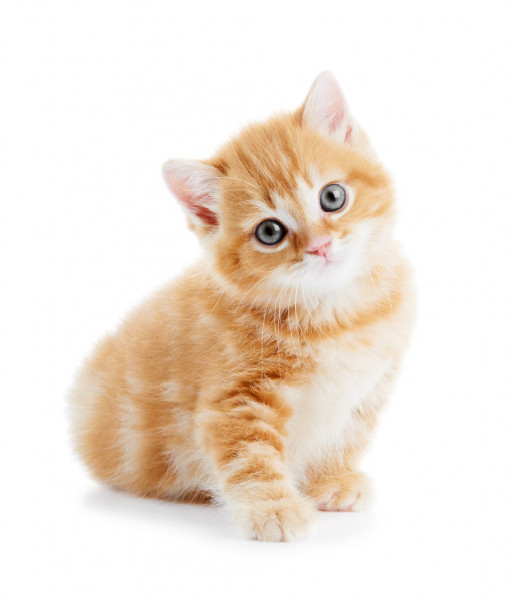

El gato doméstico12 (Felis silvestris catus), llamado más comúnmente gato, y de forma coloquial minino,3 michino,4 michi,5 micho,6 mizo,7 miz,8 morroño9 o morrongo,10 y algunos nombre más, es un mamífero carnívoro de la familia Felidae. Es una subespecie domesticada por la convivencia con el ser humano. El nombre actual en muchas lenguas proviene del latín vulgar catus. Irónicamente, catus aludía a los gatos salvajes, mientras que los gatos domésticos, en latín, eran llamados felis. Como resultado de mutaciones genéticas, cruzamiento y selección artificial, hay numerosas razas. Algunas, como la raza sphynx o la peterbald están desprovistas de pelo; otras carecen de cola, como los gatos de la raza manx, y algunas tienen coloraciones atípicas, como los llamados gatos azules. El gato doméstico12 (Felis silvestris catus), llamado más comúnmente gato, y de forma coloquial minino,3 michino,4 michi,5 micho,6 mizo,7 miz,8 morroño9 o morrongo,10 y algunos nombre más, es un mamífero carnívoro de la familia Felidae. Es una subespecie domesticada por la convivencia con el ser humano. El nombre actual en muchas lenguas proviene del latín vulgar catus. Irónicamente, catus aludía a los gatos salvajes, mientras que los gatos domésticos, en latín, eran llamados felis. Como resultado de mutaciones genéticas, cruzamiento y selección artificial, hay numerosas razas. Algunas, como la raza sphynx o la peterbald están desprovistas de pelo; otras carecen de cola, como los gatos de la raza manx, y algunas tienen coloraciones atípicas, como los llamados gatos azules.
Cuando se asean, los gatitos ingieren mucha cantidad de pelo muerto por lo que cepillarlo es fundamental para que esa cantidad no sea excesiva. Los gatos mudan el pelaje durante todo el año y un tercio de su día a día se centra en el aseo. Por eso el cuidado de su pelo es tan importante. Según la raza del gato su cuidado varía. Los de pelo largo, como los Persa, necesitan un cepillado diario. Los gatos de pelo semilargo como el Maine Coon solo necesitan un cepillado suave una vez a la semana, y con los gatos de pelo corto, como el Siamés, es suficiente con pasarle suavemente la mano. Si nuestro peludo amigo no tiene una dieta equilibrada se verá reflejado en su pelaje y se le caerá con más frecuencia. Se puede retrasar su crecimiento e incluso que el pelo pierda brillo y se parta con gran facilidad. Con una dieta equilibrada y con suplemento como la Pasta Malta, se favorece el crecimiento del pello para que crezca sano y fuerte. Vacunar y desparasitar a tu gato es fundamental para que crezca sano. A partir de los 2 meses de vida se debe iniciar la vacunación para fortalecer el desarrollo del sistema inmunológico del gatito, que debe ser llevada a cabo por un veterinario cualificado. Antes de vacunar, es muy importante realizar test de enfermedades para descarstar que nuestro gatito padezca las enfermedades más frecuentes de los felinos y pueda vacunarse sin ningún tipo de problema.
